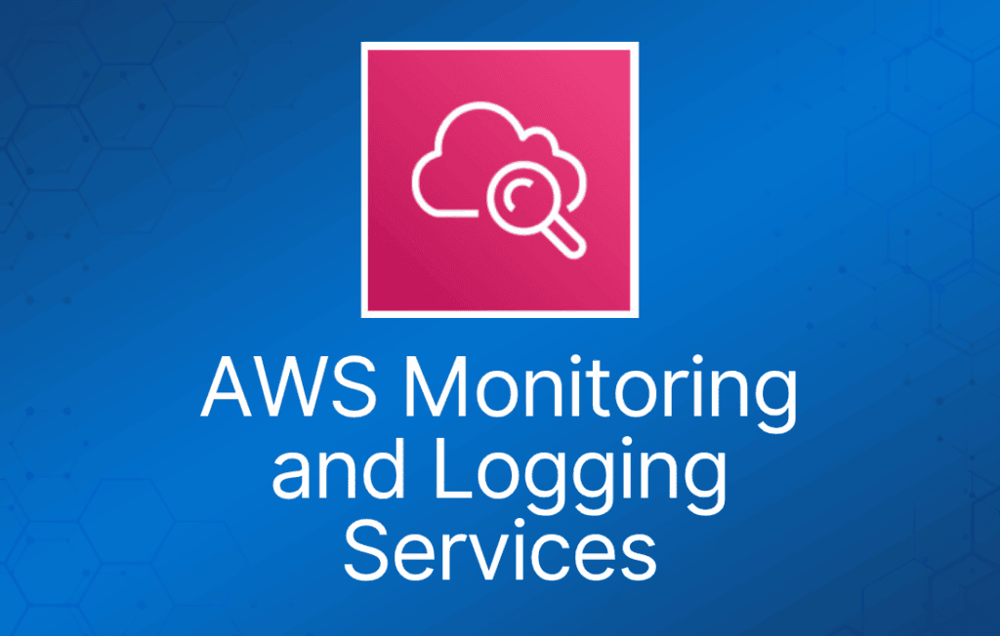

这一类 AWS 服务包括为运行在 AWS 上的应用程序提供日志记录、监控和审计的服务。
Amazon CloudWatch
Amazon CloudWatch 是针对 AWS 云资源及你在 AWS 上运行的应用程序的监控服务。
CloudWatch 用于性能监控（CloudTrail 用于审计）。
用于收集和跟踪指标、收集和监控日志文件，以及设置告警。
自动响应 AWS 资源的变化。
可监控的资源包括：
- EC2 实例。
- DynamoDB 表。
- RDS 数据库实例。
- 应用程序和服务生成的自定义指标。
- 应用程序生成的任何日志文件。
获得资源利用率的系统级全局视图。
CloudWatch 监控涵盖应用程序性能。
监控运行健康状况。
CloudWatch 可通过 API、命令行界面、AWS SDK 和 AWS Management Console 访问。
CloudWatch 与 IAM 集成。
Amazon CloudWatch Logs 让你能够使用现有的系统、应用程序和自定义日志文件来监控和排查系统及应用程序问题。
CloudWatch Logs 可用于实时应用程序和系统监控，也可用于长期日志保留。
CloudWatch Logs 默认无限期保留日志。
CloudTrail 日志可以发送到 CloudWatch Logs 进行实时监控。
CloudWatch Logs 指标筛选器可以针对特定术语、短语或值评估 CloudTrail 日志。
CloudWatch 按如下方式保留指标数据：
- 周期小于 60 秒的数据点保留 3 小时。这些数据点是高分辨率自定义指标。
- 周期为 60 秒（1 分钟）的数据点保留 15 天。
- 周期为 300 秒（5 分钟）的数据点保留 63 天。
- 周期为 3600 秒（1 小时）的数据点保留 455 天（15 个月）。
控制面板（Dashboards）允许你创建、自定义、交互并保存 AWS 资源和自定义指标的图表。
告警（Alarms）可用于监控账户中的任何 Amazon CloudWatch 指标。
事件（Events）是描述 AWS 资源变化的系统事件流。
日志（Logs）帮助你聚合、监控和存储日志。
基本监控 = 5 分钟粒度（EC2 实例、EBS 卷、ELB 和 RDS 数据库免费）。
详细监控 = 1 分钟粒度（收费）。
多个 AWS 产品和服务会自动提供指标。
EC2 实例没有内存使用率的标准指标。
自定义指标是你提供给 Amazon CloudWatch 的任何指标（例如网页加载时间或应用程序性能）。
存储日志的选项：
- CloudWatch Logs。
- 集中式日志系统（如 Splunk）。
- 自定义脚本并存储在 S3 上。
不要将日志存储在非持久性磁盘上：
最佳实践是将日志存储在 CloudWatch Logs 或 S3 中。
CloudWatch Logs 订阅可跨多个 AWS 账户使用（使用跨账户访问）。
Amazon CloudWatch 使用 Amazon SNS 发送电子邮件。
AWS CloudTrail
AWS CloudTrail 是一项 Web 服务，记录账户上的活动并将日志文件传送到 Amazon S3 存储桶。
CloudTrail 用于审计（CloudWatch 用于性能监控）。
CloudTrail 的核心是日志记录，保存 AWS 账户的 API 调用历史。
通过记录账户上执行的操作，提供对用户活动的可见性。
API 历史记录支持安全分析、资源变更跟踪和合规审计。
记录通过以下方式发起的 API 调用：
- AWS Management Console。
- AWS SDK。
- 命令行工具。
- 高级别 AWS 服务（如 CloudFormation）。
CloudTrail 记录来自大多数 AWS 服务的账户活动和服务事件，并记录以下内容：
- API 调用者的身份。
- API 调用的时间。
- API 调用者的源 IP 地址。
- 请求参数。
- AWS 服务返回的响应元素。
CloudTrail 默认启用。
CloudTrail 按 AWS 账户划分。
你可以使用 S3 存储桶整合多个账户的日志：
- 在付款账户中开启 CloudTrail。
- 创建允许跨账户访问的存储桶策略。
- 在其他账户中开启 CloudTrail，并使用付款账户中的存储桶。
你可以将 CloudTrail 与 CloudWatch Logs 集成，将 CloudTrail 捕获的数据事件传送到 CloudWatch Logs 日志流。
CloudTrail 日志文件完整性验证功能让你能够确定 CloudTrail 日志文件在传送到指定 Amazon S3 存储桶后是否被更改、删除或修改。